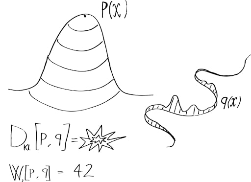

Wasserstein Generative Adversarial Network
Wasserstein Generative Adversarial Networks (WGANs)
What is a Wasserstein GAN?
A Wasserstein GAN (WGAN) is an improvement to the original GAN that uses the Wasserstein distance (also called Earth Mover's distance) instead of Jensen-Shannon divergence to measure the difference between the real and generated data distributions. This leads to more stable training and better quality results.
A Wasserstein GAN (WGAN) is an improvement to the original GAN that uses the Wasserstein distance (also called Earth Mover's distance) instead of Jensen-Shannon divergence to measure the difference between the real and generated data distributions. This leads to more stable training and better quality results.
Why Traditional GANs Have Problems
Issues with Standard GANs:
- Mode collapse: The generator produces a limited variety of samples
- Vanishing gradients: When the discriminator becomes too good, the generator stops learning
- Training instability: Oscillations instead of convergence
- Lack of correlation: Loss doesn't correlate well with output quality
The Limitations of JS Divergence
The Problem with Jensen-Shannon Divergence:
When two distributions have non-overlapping supports (which happens early in GAN training), the JS divergence returns a constant value:
$$ \text{JSD}(P_r || P_g) = \log 2 $$
This leads to uninformative gradients for the generator, causing training difficulties.
When two distributions have non-overlapping supports (which happens early in GAN training), the JS divergence returns a constant value:
$$ \text{JSD}(P_r || P_g) = \log 2 $$
This leads to uninformative gradients for the generator, causing training difficulties.
Optimal Transport and Wasserstein Distance
What is Optimal Transport?
Optimal Transport is a mathematical framework for comparing probability distributions by finding the most efficient way to transform one distribution into another, minimizing a "transportation cost."
Optimal Transport is a mathematical framework for comparing probability distributions by finding the most efficient way to transform one distribution into another, minimizing a "transportation cost."
The Wasserstein-1 Distance (Earth Mover's Distance):
$$ W_1(P_r, P_g) = \inf_{\gamma \in \Pi(P_r, P_g)} \mathbb{E}_{(x,y) \sim \gamma} \left[ \|x - y\| \right] $$
Where:
$$ W_1(P_r, P_g) = \inf_{\gamma \in \Pi(P_r, P_g)} \mathbb{E}_{(x,y) \sim \gamma} \left[ \|x - y\| \right] $$
Where:
- $\Pi(P_r, P_g)$ is the set of all joint distributions $\gamma(x,y)$ whose marginals are $P_r$ and $P_g$
- $\|x - y\|$ represents the cost of moving a unit of mass from $x$ to $y$
Why Wasserstein is Better:
- Provides meaningful gradients even when distributions don't overlap
- Gives a continuous measure of distance between distributions
- The Wasserstein loss correlates well with generated sample quality
Kantorovich-Rubinstein Duality
The Dual Form of the Wasserstein Distance:
The Wasserstein distance can be rewritten using Kantorovich-Rubinstein duality as: $$ W_1(P_r, P_g) = \sup_{f \in \text{Lip}_1} \mathbb{E}_{x \sim P_r}[f(x)] - \mathbb{E}_{x \sim P_g}[f(x)] $$
Where $\text{Lip}_1$ is the set of all 1-Lipschitz functions (functions where $|f(x) - f(y)| \leq |x - y|$ for all $x, y$).
The Wasserstein distance can be rewritten using Kantorovich-Rubinstein duality as: $$ W_1(P_r, P_g) = \sup_{f \in \text{Lip}_1} \mathbb{E}_{x \sim P_r}[f(x)] - \mathbb{E}_{x \sim P_g}[f(x)] $$
Where $\text{Lip}_1$ is the set of all 1-Lipschitz functions (functions where $|f(x) - f(y)| \leq |x - y|$ for all $x, y$).
Proof of Kantorovich-Rubinstein Duality
Let's show the equivalence between the primal form: $$ W_1(P_r, P_g) = \inf_{\gamma \in \Pi(P_r, P_g)} \mathbb{E}_{(x,y) \sim \gamma} \left[ \|x - y\| \right] $$ And the dual form: $$ W_1(P_r, P_g) = \sup_{f \in \text{Lip}_1} \mathbb{E}_{x \sim P_r}[f(x)] - \mathbb{E}_{x \sim P_g}[f(x)] $$ The proof relies on linear programming duality. The primal problem can be formulated as a linear program over coupling measures, and the dual involves optimizing over the space of 1-Lipschitz functions. For any coupling $\gamma \in \Pi(P_r, P_g)$ and any 1-Lipschitz function $f$: $$ \mathbb{E}_{x \sim P_r}[f(x)] - \mathbb{E}_{x \sim P_g}[f(x)] = \int f(x)dP_r(x) - \int f(y)dP_g(y) $$ Since $\gamma$ has marginals $P_r$ and $P_g$: $$ \int f(x)dP_r(x) - \int f(y)dP_g(y) = \iint f(x)d\gamma(x,y) - \iint f(y)d\gamma(x,y) $$ $$ = \iint [f(x) - f(y)]d\gamma(x,y) $$ Since $f$ is 1-Lipschitz, $f(x) - f(y) \leq \|x - y\|$, so: $$ \iint [f(x) - f(y)]d\gamma(x,y) \leq \iint \|x - y\|d\gamma(x,y) = \mathbb{E}_{(x,y) \sim \gamma}[\|x - y\|] $$ This shows that the dual objective is bounded by the primal objective. The equality can be proved by carefully constructing optimal solutions.
Let's show the equivalence between the primal form: $$ W_1(P_r, P_g) = \inf_{\gamma \in \Pi(P_r, P_g)} \mathbb{E}_{(x,y) \sim \gamma} \left[ \|x - y\| \right] $$ And the dual form: $$ W_1(P_r, P_g) = \sup_{f \in \text{Lip}_1} \mathbb{E}_{x \sim P_r}[f(x)] - \mathbb{E}_{x \sim P_g}[f(x)] $$ The proof relies on linear programming duality. The primal problem can be formulated as a linear program over coupling measures, and the dual involves optimizing over the space of 1-Lipschitz functions. For any coupling $\gamma \in \Pi(P_r, P_g)$ and any 1-Lipschitz function $f$: $$ \mathbb{E}_{x \sim P_r}[f(x)] - \mathbb{E}_{x \sim P_g}[f(x)] = \int f(x)dP_r(x) - \int f(y)dP_g(y) $$ Since $\gamma$ has marginals $P_r$ and $P_g$: $$ \int f(x)dP_r(x) - \int f(y)dP_g(y) = \iint f(x)d\gamma(x,y) - \iint f(y)d\gamma(x,y) $$ $$ = \iint [f(x) - f(y)]d\gamma(x,y) $$ Since $f$ is 1-Lipschitz, $f(x) - f(y) \leq \|x - y\|$, so: $$ \iint [f(x) - f(y)]d\gamma(x,y) \leq \iint \|x - y\|d\gamma(x,y) = \mathbb{E}_{(x,y) \sim \gamma}[\|x - y\|] $$ This shows that the dual objective is bounded by the primal objective. The equality can be proved by carefully constructing optimal solutions.
From Theory to Practice: WGAN Architecture
| Standard GAN | Wasserstein GAN |
|---|---|
| Discriminator outputs probabilities (0-1) | Critic outputs real numbers (unbounded) |
| Uses sigmoid in final layer | No sigmoid in final layer |
| Log loss for training | Wasserstein loss (difference of expectations) |
| No explicit constraint on discriminator | Weight clipping or gradient penalty for Lipschitz constraint |
The WGAN Objective Function:
$$ \min_G \max_{D \in \mathcal{D}} \mathbb{E}_{x \sim P_r}[D(x)] - \mathbb{E}_{z \sim p(z)}[D(G(z))] $$
Where:
$$ \min_G \max_{D \in \mathcal{D}} \mathbb{E}_{x \sim P_r}[D(x)] - \mathbb{E}_{z \sim p(z)}[D(G(z))] $$
Where:
- $D$ is the critic (renamed from discriminator) constrained to be 1-Lipschitz
- $G$ is the generator
- $z$ is random noise
- $\mathcal{D}$ is the set of 1-Lipschitz functions
Enforcing the Lipschitz Constraint
Two Main Approaches:
- Weight Clipping (Original WGAN): Clip weights to a small range like [-0.01, 0.01]
- Gradient Penalty (WGAN-GP): Add a penalty term to enforce gradient norm of 1
WGAN-GP Objective:
$$ L = \mathbb{E}_{\tilde{x} \sim P_g}[D(\tilde{x})] - \mathbb{E}_{x \sim P_r}[D(x)] + \lambda \mathbb{E}_{\hat{x} \sim P_{\hat{x}}}[(||\nabla_{\hat{x}} D(\hat{x})||_2 - 1)^2] $$
Where:
$$ L = \mathbb{E}_{\tilde{x} \sim P_g}[D(\tilde{x})] - \mathbb{E}_{x \sim P_r}[D(x)] + \lambda \mathbb{E}_{\hat{x} \sim P_{\hat{x}}}[(||\nabla_{\hat{x}} D(\hat{x})||_2 - 1)^2] $$
Where:
- $\hat{x}$ are points sampled uniformly along lines between pairs of points from $P_r$ and $P_g$
- $\lambda$ is the gradient penalty coefficient (usually 10)
Detailed Explanation of the Gradient Penalty
The 1-Lipschitz constraint requires that: $$ |D(x) - D(y)| \leq |x - y| \quad \text{for all } x, y $$ This is equivalent to requiring the gradient norm to be at most 1 everywhere: $$ ||\nabla_x D(x)||_2 \leq 1 \quad \text{for all } x $$ The WGAN-GP enforces this by penalizing the model when the gradient norm deviates from 1 at randomly sampled points. The samples are taken along straight lines between real and generated data points: $$ \hat{x} = t \cdot x + (1-t) \cdot \tilde{x} $$ where $t \sim U[0,1]$, $x \sim P_r$, and $\tilde{x} \sim P_g$. The penalty term is: $$ \lambda \cdot \mathbb{E}_{\hat{x}}[(||\nabla_{\hat{x}} D(\hat{x})||_2 - 1)^2] $$ This penalty forces the gradient norm to be close to 1 along important regions of the data space, effectively enforcing the Lipschitz constraint without explicitly clipping weights.
The 1-Lipschitz constraint requires that: $$ |D(x) - D(y)| \leq |x - y| \quad \text{for all } x, y $$ This is equivalent to requiring the gradient norm to be at most 1 everywhere: $$ ||\nabla_x D(x)||_2 \leq 1 \quad \text{for all } x $$ The WGAN-GP enforces this by penalizing the model when the gradient norm deviates from 1 at randomly sampled points. The samples are taken along straight lines between real and generated data points: $$ \hat{x} = t \cdot x + (1-t) \cdot \tilde{x} $$ where $t \sim U[0,1]$, $x \sim P_r$, and $\tilde{x} \sim P_g$. The penalty term is: $$ \lambda \cdot \mathbb{E}_{\hat{x}}[(||\nabla_{\hat{x}} D(\hat{x})||_2 - 1)^2] $$ This penalty forces the gradient norm to be close to 1 along important regions of the data space, effectively enforcing the Lipschitz constraint without explicitly clipping weights.
The WGAN Training Algorithm
WGAN Training Loop:
- For each critic training step:
- Sample real data batch $\{x^{(i)}\}_{i=1}^m$ from real data distribution $P_r$
- Sample noise batch $\{z^{(i)}\}_{i=1}^m$ from noise distribution $p(z)$
- Generate fake data $\{\tilde{x}^{(i)} = G(z^{(i)})\}_{i=1}^m$
- Update critic by ascending its stochastic gradient: $$\nabla_{\theta_D} \frac{1}{m} \sum_{i=1}^m [D(x^{(i)}) - D(G(z^{(i)}))]$$
- Apply weight clipping to critic parameters: $w \leftarrow \text{clip}(w, -c, c)$ (Original WGAN)
- OR apply gradient penalty (WGAN-GP)
- For each generator training step:
- Sample noise batch $\{z^{(i)}\}_{i=1}^m$ from noise distribution $p(z)$
- Update generator by descending its stochastic gradient: $$\nabla_{\theta_G} \frac{1}{m} \sum_{i=1}^m [-D(G(z^{(i)}))]$$
Key Implementation Details:
- Train the critic more frequently than the generator (often 5:1 ratio)
- Use RMSProp or Adam with a low learning rate (e.g., 0.00005)
- Avoid using batch normalization in the critic (can use layer normalization instead)
- WGAN-GP tends to be more stable than the original weight clipping approach
WGAN Benefits and Applications
Advantages of WGANs:
- More stable training: Less sensitive to architectural choices and hyperparameters
- Meaningful loss: The Wasserstein distance correlates well with generated sample quality
- Reduced mode collapse: Better coverage of the data distribution
- Improved convergence: Clearer signals when training is complete
Mathematical Comparison of Distance Metrics
Comparing Different Probability Divergences/Distances:
- KL Divergence: $D_{KL}(P || Q) = \int P(x) \log \frac{P(x)}{Q(x)} dx$
- JS Divergence: $D_{JS}(P || Q) = \frac{1}{2} D_{KL}(P || M) + \frac{1}{2} D_{KL}(Q || M)$ where $M = \frac{1}{2}(P+Q)$
- Wasserstein Distance: $W_1(P, Q) = \inf_{\gamma \in \Pi(P, Q)} \mathbb{E}_{(x,y) \sim \gamma} \left[ \|x - y\| \right]$
- KL and JS divergences are not well-defined when distributions don't overlap
- Wasserstein distance gives meaningful values and gradients even for non-overlapping distributions
- Wasserstein distance respects the underlying geometry of the space
Visual Intuition: Why Wasserstein Works Better
Consider two 1D Gaussian distributions $P$ and $Q$ moving away from each other: When they have significant overlap: - KL: Defined, provides useful gradients - JS: Defined, provides useful gradients - W1: Defined, provides useful gradients As they move further apart with minimal overlap: - KL: Approaches infinity (extremely high gradients) - JS: Approaches $\log 2$ (vanishing gradients) - W1: Equals the distance between distributions (stable gradients) When they have no overlap: - KL: Infinite (undefined) - JS: Constant $\log 2$ (zero gradients) - W1: Exactly the distance between means (meaningful, useful gradients) This is why Wasserstein distance provides a more stable learning signal throughout the entire training process.
Consider two 1D Gaussian distributions $P$ and $Q$ moving away from each other: When they have significant overlap: - KL: Defined, provides useful gradients - JS: Defined, provides useful gradients - W1: Defined, provides useful gradients As they move further apart with minimal overlap: - KL: Approaches infinity (extremely high gradients) - JS: Approaches $\log 2$ (vanishing gradients) - W1: Equals the distance between distributions (stable gradients) When they have no overlap: - KL: Infinite (undefined) - JS: Constant $\log 2$ (zero gradients) - W1: Exactly the distance between means (meaningful, useful gradients) This is why Wasserstein distance provides a more stable learning signal throughout the entire training process.
Advanced Topics: Extensions of WGAN
| Extension | Key Idea | Benefit |
|---|---|---|
| WGAN-GP | Gradient penalty instead of weight clipping | Better Lipschitz enforcement, more stable training |
| WGAN-LP | Gradient penalty only where gradient > 1 | Less restrictive constraint, faster training |
| Spectral Normalization | Normalize weights to control Lipschitz constant | Efficient Lipschitz enforcement, stable training |
| WGAN-div | Alternative regularization of critic gradients | Improved sample quality and training stability |
Practical Implementation Advice
Tips for Implementing WGANs:
- Use the WGAN-GP variant for better stability
- Choose a gradient penalty coefficient of 10
- Remove batch normalization from the critic (use layer norm or instance norm)
- Train the critic 5 times for each generator update
- Use the Adam optimizer with a learning rate of 0.0001 and betas=(0.5, 0.9)
- Monitor the Wasserstein estimate (critic loss) to gauge training progress
References
- Arjovsky, M., Chintala, S., & Bottou, L. (2017). Wasserstein Generative Adversarial Networks. International Conference on Machine Learning (ICML).